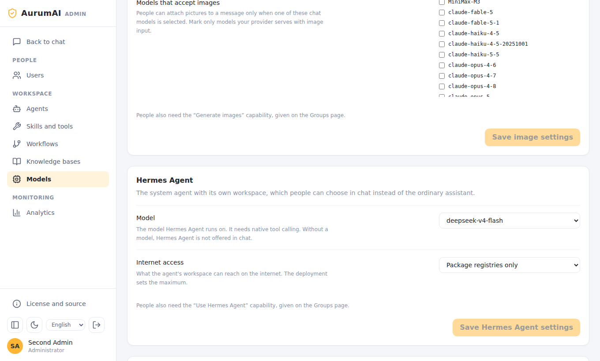
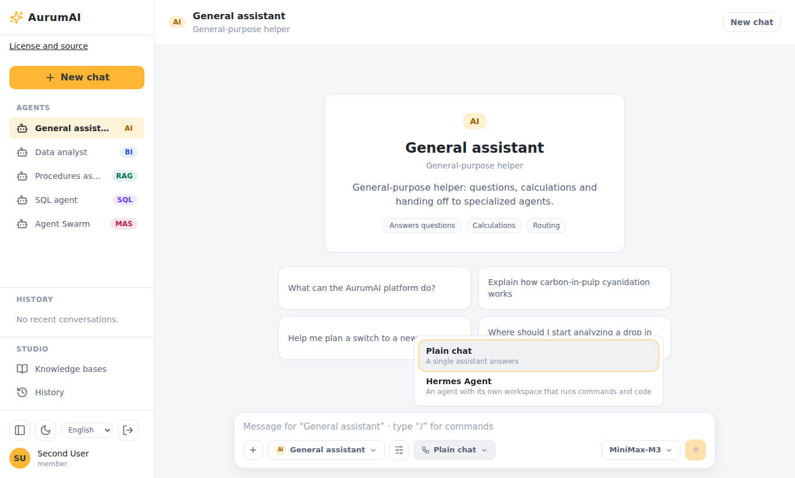
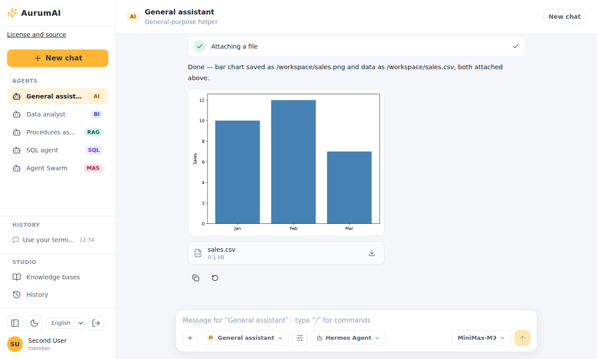
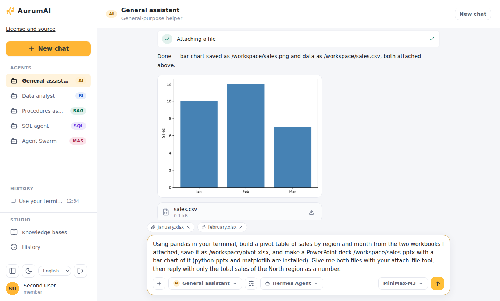
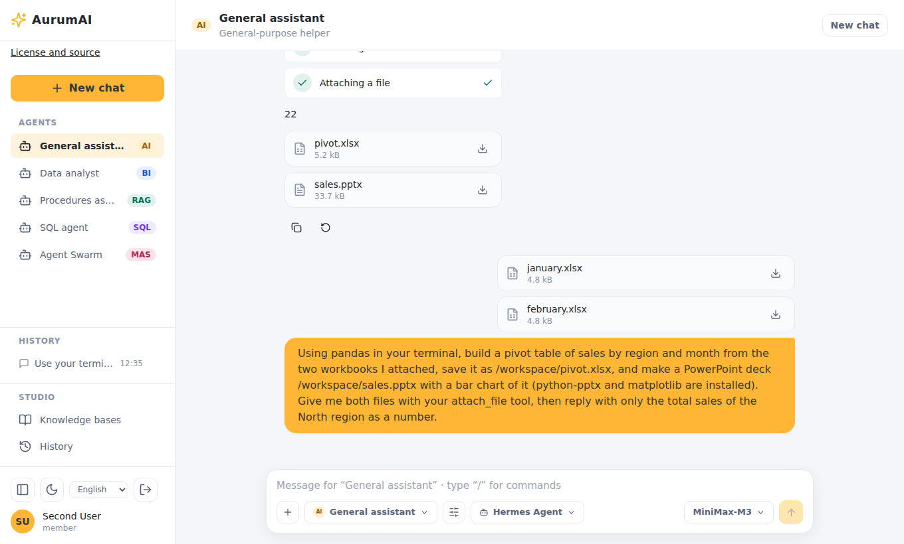
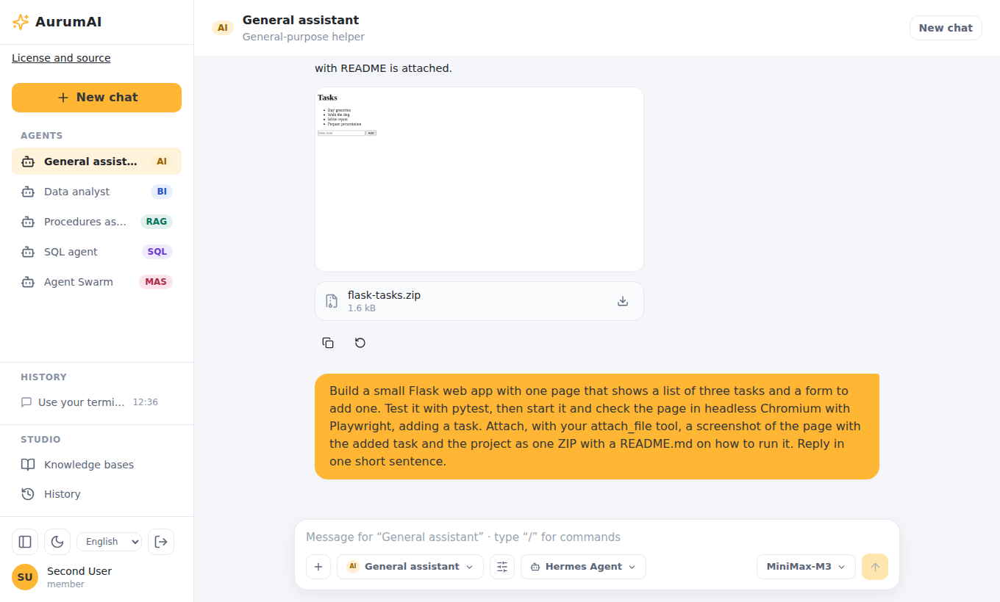
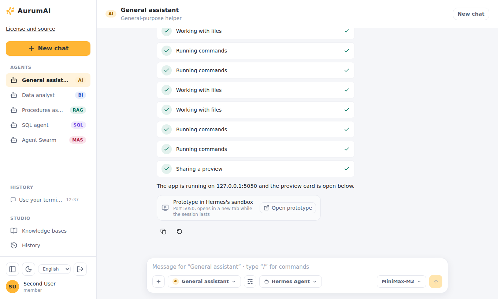
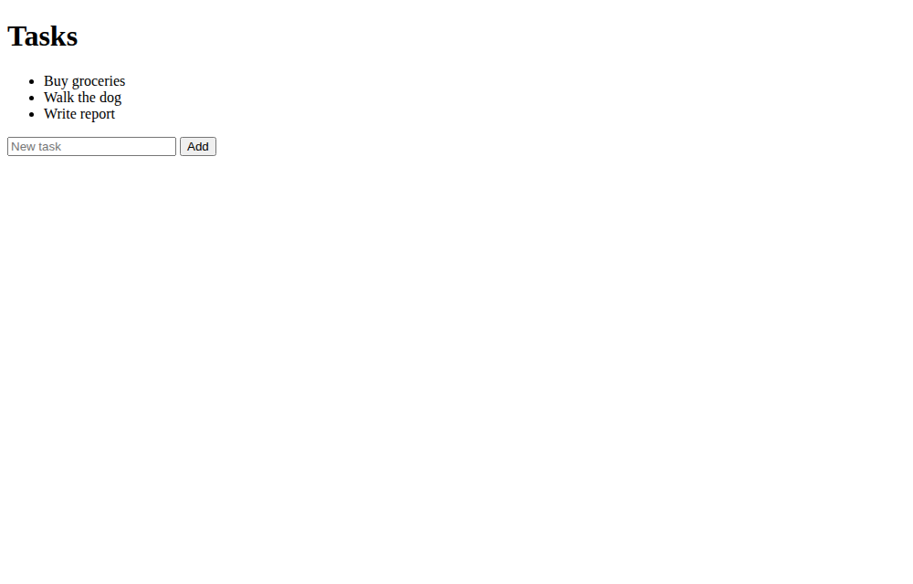

Hermes Agent guide
Hermes Agent is an opt-in system agent. Instead of a single answer from a model, it gets a workspace of its own, a long-lived sandbox where it runs commands and code, keeps files between turns and reports back. Use it for tasks that need work, not just text: analysing spreadsheets, producing documents and charts, building and testing a small web app.
This guide covers how to set it up, how people use it and how administrators manage it. The settings reference is in configuration; the design and its reasoning in the design document.
What it can do
- Run commands and code in its own sandbox. The image has Python (pandas, matplotlib, openpyxl, python-pptx, python-docx, pypdf), Node.js 24 with npm, a headless Chromium and Playwright.
- Work on your files. Files you attach appear in
/workspace/inputs/in its sandbox, with stable numbered names. - Hand files back. Charts, spreadsheets, documents, presentations and archives appear in the answer as downloads; pictures show under the answer.
- Use platform tools through a bridge: knowledge search, web search and read, image generation and editing, skills it is granted, and questions to you.
- Look at pictures when the organization marks its model as taking images.
- Remember notes about you across conversations, which you can clear.
- Write skills for itself that an administrator reviews before anyone else can use them.
- Show you what it builds. It starts an app in the background and shares it; an Open prototype card appears in the answer.
- Be a workflow node, running inside a larger workflow.
Set it up
On Docker you need version 28 or newer on the host: every sandbox gets its own internal network. On Kubernetes see Hermes on Kubernetes instead of steps 1 and 2 below; steps 3 and 4 are the same.
-
Create the secrets. In
.env:HERMES_ENABLED=true HERMES_EGRESS_SERVICE_SECRET=<a long random value> HERMES_EGRESS_MAX_MODE=packages # none | packages | publicHERMES_EGRESS_MAX_MODEis the most internet any organization can give its sandboxes.packagesallows only package registries (HERMES_EGRESS_PACKAGE_HOSTS: PyPI and npm by default). -
Build the sandbox image (about 2.4 GB) and the runner, then start the stack with the overlay and profiles:
docker compose -f docker-compose.yml -f docker-compose.hermes.yml --profile build build hermes-sandbox runner docker compose -f docker-compose.yml -f docker-compose.hermes.yml \ --profile hermes --profile skills-exec up -d --build -
The model gateway must forward native tool calls, and the model you give Hermes needs tool calling.
-
In the Admin app (see Administration), choose Hermes's model and grant the
agents.hermescapability to the right group.
Hermes needs tool-worker and skill-executor running (skill-executor is in the
skills-exec profile on Compose, and part of the chart on Kubernetes).
Previews of running apps (optional)
Previews let a person open an app Hermes is running. They are off until you give them their own origin:
HERMES_PREVIEW_ENABLED=true
HERMES_PREVIEW_ORIGIN=https://{preview}.preview.example.org
HERMES_PREVIEW_SERVICE_SECRET=<random>
HERMES_PREVIEW_EXECUTOR_SECRET=<random>
Start the hermes-preview profile as well. The service listens on
HERMES_PREVIEW_PORT (8095) and must be reachable at the origin template, so it needs a
wildcard DNS record and a wildcard TLS certificate for it, terminated in front of
the service. Use a domain that is not the platform's own and not a subdomain of it:
a preview runs agent-written code in the viewer's browser, and a page on a shared
parent domain can set cookies for that parent. See the
security model.
On Kubernetes the chart's hermes.preview block does the same and adds a wildcard
Ingress rule. For local trials with Compose set the origin to
http://{preview}.preview.localhost:8095, which browsers resolve to the machine itself. Connection limits and timeouts are in the
configuration reference.
Administration
Everything is in the Admin app.

- Models → Hermes Agent.
- Model: what Hermes runs on. Without one, Hermes is not offered in chat. The model must be one the organization may use.
- Internet access: None, Package registries only or Public internet, within the deployment's maximum; a mode above the maximum is shown as such and refused.
- Users → Groups. Grant
agents.hermesto the people who should have it. Nobody has it by default. - Workflows and Agents. A Hermes Agent can be a workflow node ("Hermes Agent (workflow nodes)" kind) and runs on the organization's Hermes model.
If the page says Hermes is switched off on this deployment, HERMES_ENABLED is not set.
Reviewing skills Hermes wrote
Hermes can write skills for itself while it works. Each lands in Skills and tools → Skills Hermes Agent wrote as a draft for the person it was written for. Review shows every file as written. Nothing in it runs until you approve it. Approving makes it a code skill of the organization that its author can use; you grant it to others as for any skill. Decline rejects it. Read every file: it is code.
Limits
| Limit | Default |
|---|---|
| Sandboxes running at once | 16 in total, 4 per organization |
| Sandbox resources | 2 CPUs, 2 GiB memory, 512 processes, 1 GiB workspace |
| Idle sandbox | Stopped after 30 minutes; the workspace is snapshotted |
| Session lifetime | 24 hours |
| Skill run | 240 seconds per call |
| Files handed back | 10 per turn, 20 MiB each |
Limits are settings of the deployment; the names are in the configuration reference.
Using it
-
In the chat, open the workflow picker and choose Hermes Agent.

-
Describe the task. Attach files with + or by dragging them in (up to 10 per message, 20 MiB each; spreadsheets, documents, code, text, ZIP and PNG, JPEG or WebP pictures; at most 20 uploads and 200 MiB per conversation).
-
Watch the tool rows: commands it runs appear by kind, not their output.
-
When it asks you something, a question card appears; answer to continue.
-
Download what it produced from the answer. Pictures show under it.

A conversation with Hermes keeps its workspace between messages, so follow-ups can build on earlier files.
Example: pivot table and a presentation
Attach several .xlsx files and ask: "Combine these workbooks into one pivot table
by region and month in a new workbook, and make a short presentation with charts."
Hermes reads the files from its inputs folder, builds the workbook with openpyxl or
pandas, draws charts with matplotlib, writes a .pptx with python-pptx and attaches
both.


Example: a web app prototype
Ask: "Build a prototype of a task tracker web app, check that it works, and give me the code with instructions to run it." Hermes scaffolds the app with Node.js, runs it, checks it in a headless browser, and returns a ZIP with the code, a README and screenshots. With previews enabled it also shares the running app: an Open prototype card opens it in a new tab at an origin of its own.



Memory and your skills
Settings → Hermes Agent memory shows what Hermes keeps about you; Clear memory erases it. Settings → Hermes Agent skills shows the skills it wrote for you and their review status, and lets you withdraw one (see the settings screenshot).
Network and safety in short
- The sandbox has no route to your network or the internet except through the platform's egress guard, which allows the platform itself and, up to the mode the organization chose, the registries or the internet.
- Its credentials are a short-lived token that names a person only; no model-provider key is in the sandbox.
- A preview needs a ticket that opens once and a cookie that is valid for one preview, and the service re-checks it continuously; ending the session cuts it.
Details: security model.
Troubleshooting
| Symptom | Likely cause |
|---|---|
| Hermes Agent is not in the picker | HERMES_ENABLED is off, no model chosen under Models → Hermes Agent, or the user lacks agents.hermes |
| It cannot install packages | Mode is None, or the registry is not in HERMES_EGRESS_PACKAGE_HOSTS |
| The turn fails at the start | The sandbox image is not built, skill-executor is not running, or the 16/4 concurrent limit is reached |
| It cannot reach a website | Mode is not Public internet |
| Pictures are ignored | The model is not marked as accepting images (Models → Images) |
| Open prototype does nothing | Previews are off, the wildcard DNS or TLS is wrong, or the service secrets differ |